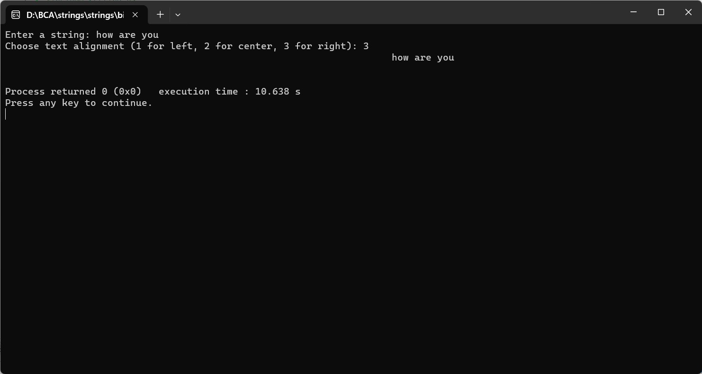

DISPLAY THE STRING ON THE OUTPUT SCREEN BUT ASK THE TEXT ALIGNMENT OPTION GIVEN BY THE USER (1 FOR LEFT, 2 FOR CENTER, 3 RIGHT)
#include
#include
void displayAlignedText(const char *str, int alignment) {
int len = strlen(str);
if (alignment == 1) { // Left alignment
printf("%s\n", str);
} else if (alignment == 2) { // Center alignment
int leftSpaces = (80 - len) / 2;
printf("%*s%s\n", leftSpaces, "", str);
} else if (alignment == 3) { // Right alignment
int rightSpaces = 80 - len;
printf("%*s%s\n", rightSpaces, "", str);
} else {
printf("Invalid alignment option selected.\n");
}
}
int main() {
char inputString[1000];
int alignmentOption;
printf("Enter a string: ");
fgets(inputString, sizeof(inputString), stdin);
printf("Choose text alignment (1 for left, 2 for center, 3 for right): ");
scanf("%d", &alignmentOption);
displayAlignedText(inputString, alignmentOption);
return 0;
}
